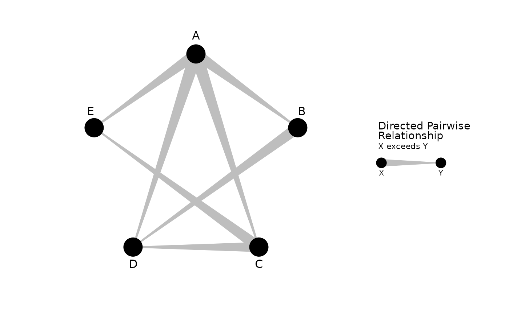
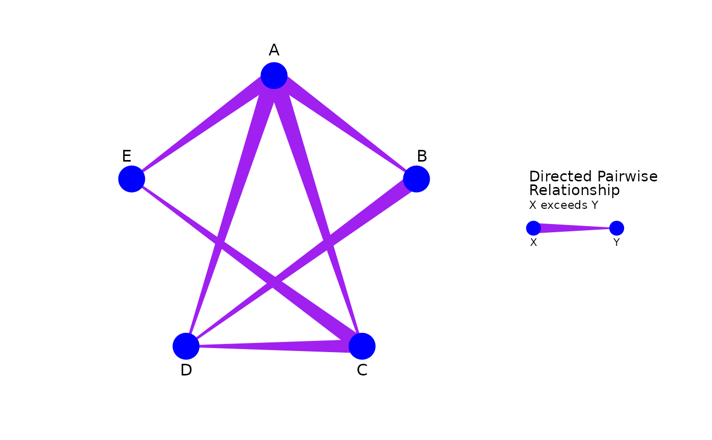
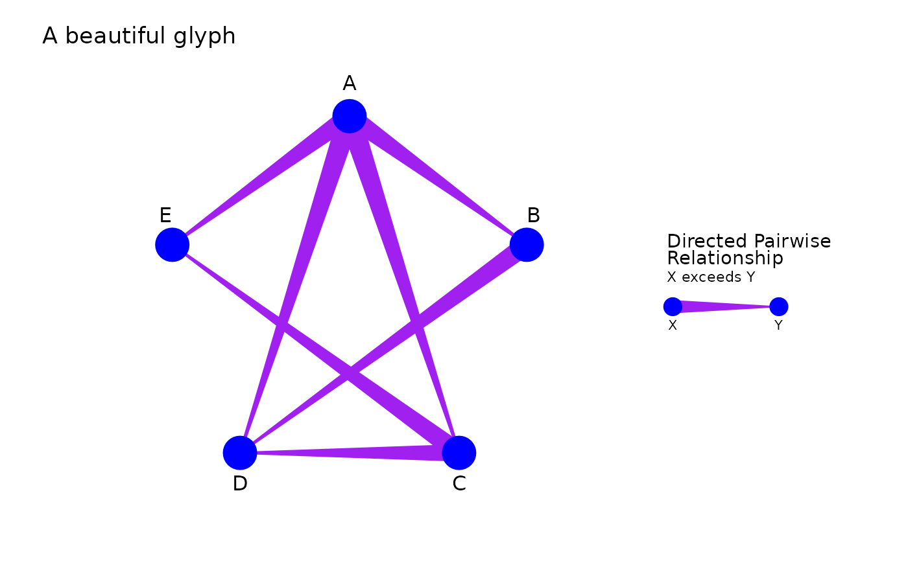
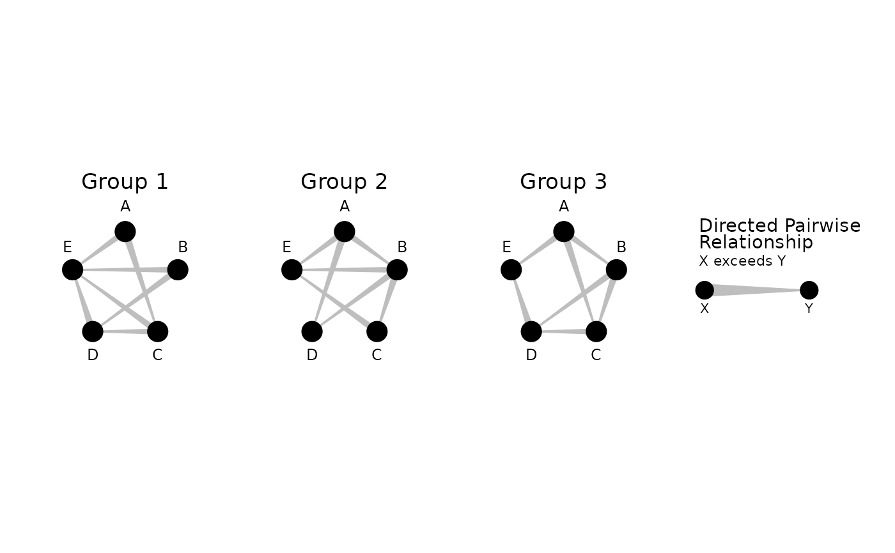
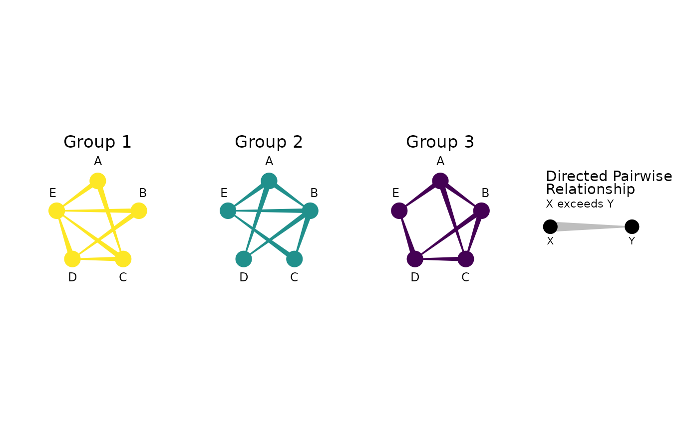
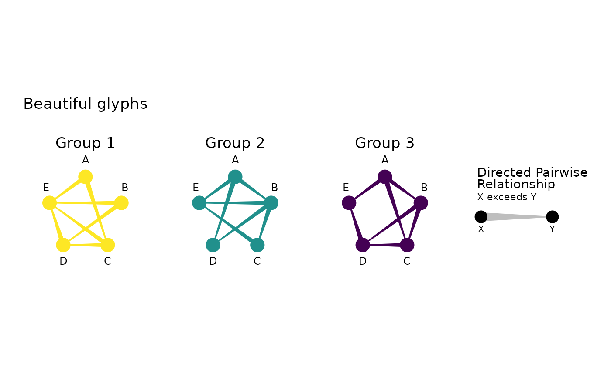

Create a network-style graph that illustrates directed pairwise relationships using custom edges.
Usage
geom_glyph(
mapping = NULL,
data = NULL,
edge_size = 1,
edge_colour = "grey",
edge_fill = NULL,
edge_alpha = 1,
node_size = 1,
node_colour = "black",
node_fill = NULL,
node_alpha = 1,
node_shape = 21,
node_spacing = 1,
label_size = 12,
group_label_size = 13,
legend_title = NULL,
legend_subtitle = NULL,
...,
stat = "identity",
position = "identity",
na.rm = FALSE,
show.legend = TRUE,
inherit.aes = TRUE
)Arguments
- mapping
Set of aesthetic mappings created by aes(). You must supply mapping if there is no plot mapping.
- data
A DataFrame with preprocessed data from either gglyph::preprocess_data_general() or gglyph::preprocess_data_statistical(). To be passed to ggplot2::ggplot().
- edge_size
A numeric scaling factor indicating the size/width of the edges. Default is 1.
- edge_colour
Color(s) of the edge outlines. Can be a single string (for non-grouped data) or a vector of strings or a function (for grouped data). Default is "grey".
- edge_fill
Color(s) for the edge fill. Can be a single string, a vector of strings, or a color function. If NULL, defaults to edge_colour.
- edge_alpha
A numeric value indicating the transparency of the edges. Default is 1.
- node_size
A numeric value indicating the size of the nodes. Default is 8.
- node_colour
Color(s) of the node outlines. Can be a single string (for non-grouped data) or a vector of strings or a function (for grouped data). Default is "black".
- node_fill
Color for the node fill. If NULL, defaults to node_colour.
- node_alpha
A numeric value indicating the transparency of the nodes. Default is 1.
- node_shape
A numeric value specifying the shape of the nodes, following ggplot2's shape specifications. Default is 21 (a circle with a border).
- node_spacing
A numeric scaling factor for the distance between nodes. Values > 1 will push nodes further apart, while values < 1 will bring them closer. Default is 1.
- label_size
A numeric value indicating the size of the node labels. Default is 12.
- group_label_size
A numeric value indicating the size of group label. Default is 13.
- legend_title
Title for the legend as a string.
- legend_subtitle
Subtitle for the legend as a string.
- ...
Additional arguments passed to ggplot2 layer.
- stat
The statistical transformation to use on the data for this layer.
- position
A position adjustment to use on the data for this layer.
- na.rm
If FALSE, the default, missing values are removed with a warning. If TRUE, missing values are silently removed.
- show.legend
Should this layer be included in the legends? Default is TRUE.
- inherit.aes
If FALSE, overrides the default aesthetics, rather than combining with them. Default is FALSE.
Examples
# For non-grouped/-facetted plot
data <- gglyph::generate_mock_data(n_groups = 1)
ggplot2::ggplot(data = data) +
gglyph::geom_glyph()

ggplot2::ggplot(data = data) +
gglyph::geom_glyph(edge_colour = "purple", node_colour = "blue")

ggplot2::ggplot(data = data) +
gglyph::geom_glyph(edge_colour = "purple", node_colour = "blue") +
ggplot2::labs(title = "A beautiful glyph")

# For grouped/facetted plot
data <- gglyph::generate_mock_data(n_groups = 3)
ggplot2::ggplot(data = data) +
gglyph::geom_glyph() +
ggplot2::facet_wrap(~ group)

ggplot2::ggplot(data = data) +
gglyph::geom_glyph(edge_colour = viridis::viridis, node_colour = viridis::viridis) +
ggplot2::facet_wrap(~ group)

ggplot2::ggplot(data = data) +
gglyph::geom_glyph(edge_colour = viridis::viridis, node_colour = viridis::viridis) +
ggplot2::facet_wrap(~ group) +
ggplot2::labs(title = "Beautiful glyphs")
